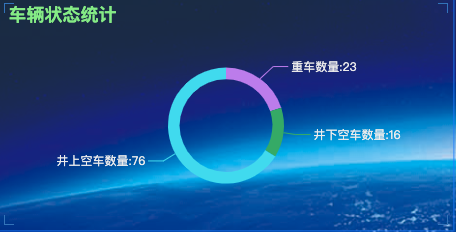
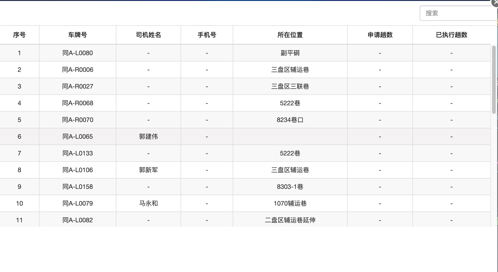
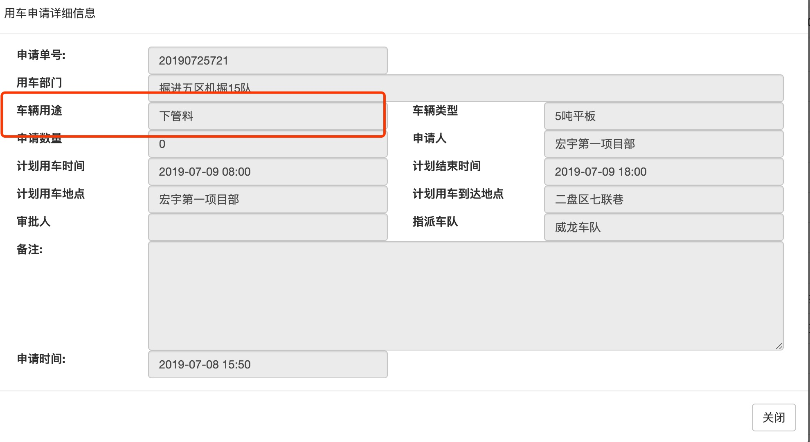
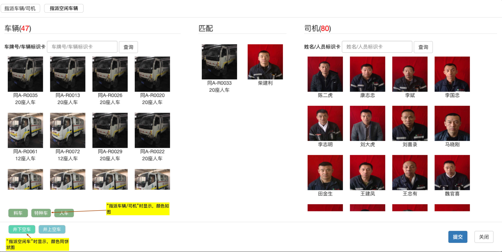

服务端
BUG修改
- 威龙塔通账户不弹出车辆识别照片（丹平）
- 井下实时数据显示手机号

- 自动结束任务后第二天司机不匹配
如果是自动结束的订单，第二天没有派车，不应该显示昨天的司机，因为此时司机已经下班
- 修改饼状图相近颜色

增加功能
- 地图车辆信息增加司机手机号 (丹平)
如果没有手机号则不用显示
- 增加车辆任务历史
查询结果以车辆为基础（同一车辆可能出现不同司机）
根据时间筛选
包含今天昨天前天快捷筛选按钮
默认显示今天的数据
结构如下表所示
| 用车单位 | 开始时间 | 完成时间 | 车辆用途 | 发车地点 | 到达地点 | 执行趟数 | 司机 | 操作 |
|---|---|---|---|---|---|---|---|---|
| 宏宇第二项目部 | 2019-07-09 20:00 | 2019-07-09 20:00 | 喷浆3趟 | 宏宇第二项目部 | 1070西翼辅运巷尾 | 3 | 陈二虎 | 查看 |
| 宏宇第二项目部 | 2019-07-09 20:00 | 2019-07-09 20:00 | 喷浆3趟 | 宏宇第二项目部 | 1070西翼辅运巷尾 | 3 | 陈二虎 | 查看 |
- 饼状图进入的车辆信息列表

重车增加操作项，点击查看当前司机任务历史
空车去掉申请趟数已执行趟数项
空车增加已完成任务查看项，点击查看当前司机任务历史
井上空车增加统计地点修车厂车队停车场塔山大道环岛等 - 用车申请详情
车辆用途增加趟数
申请数量不正确现在为0计划用车时间计划结束时间在执行中状态下改为执行时间结束时间审批人在执行中状态下改为司机申请时间改为任务状态待指派车队待派车执行中系统完成人工完成等状态
 - 增加车辆绑定状态
指派司机和车辆的时完成绑定
增加系统完成人工完成任务状态
操作人工完成状态时，同时解绑车辆和司机，进入可以指派状态 - 修改派车界面
汽车分类筛选
人车料车特种车
修改汽车图标 卡通图标
显示井上空车和井下空车
 - 增加
威龙/塔通指派车辆姓氏序号筛选功能每组10个按钮
车辆增加序号筛选按钮，全部、其他和10个数一组，
司机增加姓名筛选按钮，全部、其他和姓氏（数量从多到少排列）
| 工作组 | 人员 | 姓氏 | 大于2人的姓氏 | 大于2人的姓氏总人数 | 大于1人的姓氏 | 大于1人的姓氏总人数 |
|---|---|---|---|---|---|---|
| 威龙1组 | 93 | 44 | 8 | 50 | 15 | 64 |
| 威龙2组 | 91 | 41 | 8 | 51 | 15 | 65 |
| 威龙3组 | 98 | 52 | 6 | 42 | 16 | 62 |
| 塔通1组 | 22 | 14 | 1 | 4 | 6 | 14 |
| 塔通2组 | 22 | 14 | 2 | 8 | 4 | 12 |
| 塔通3组 | 22 | 18 | 0 | 0 | 4 | 8 |
计划长期任务
- WEBRTC技术评估（尽量多看一下相关东西）
- 第一步先做到可以跑起来一个DEMO
- 语音一对多通话
- 语音点对点通话
- 视频通话
- 视频通话中关闭视频界面
客户端
车载终端
- 客户端使用统计 （左俊）
统计各个IP地址的访问情况
- 客户端联合登录（左俊）
微信登录
快手登录
抖音登录 - WebRTC目前进度
- 信令服务器的编写
- H5客户端基于视频的实现
- Android客户端基于视频的实现
- 可以多方同时通话
- WEBRTC技术后续任务（花雷 左俊）
- H5视频通话加载对方视频目前有BUG
- 目前都是基于视频的解决方案，音视频未分离
- 无法做到视频通话中关闭视频界面，通过音频通话